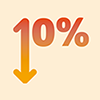
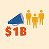
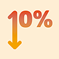
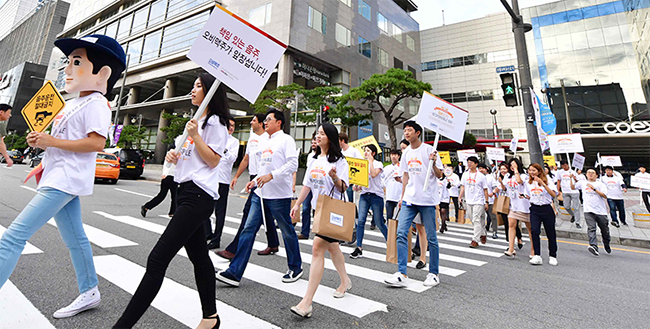
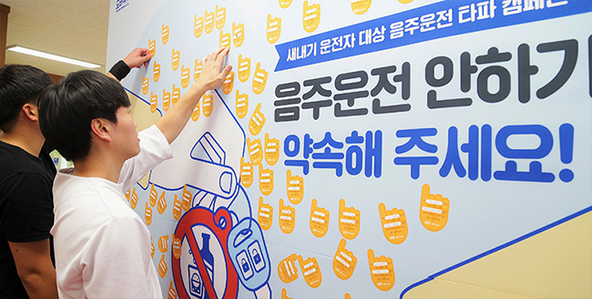
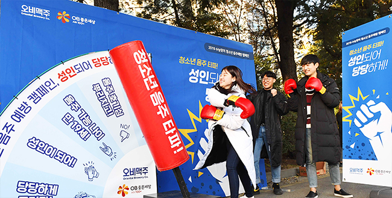

HOME
Better World
건전음주
- 01 스마트 드링킹
-
스마트 드링킹
Smart Drinking 오비맥주는 책임 있는 음주문화 조성을 위해 글로벌 본사 AB인베브와 전 세계적으로 2015년 ‘글로벌 스마트 드링킹 목표(Global Smart Drinking Goal)’를 수립하고, 2025년까지 이를 달성하고자 힘쓰고 있습니다.
오비맥주는 ‘스마트 드링킹’ 캠페인을 통해 음주운전, 미성년자 음주, 폭음 등 무분별한 음주를 줄일 수 있도록 실질적인 행동 방안을 제시하여, 소비자 스스로 올바른 선택을 하도록 돕고 건전한 음주 문화를 조성하기 위해 앞장서고 있습니다.건전음주를 위한 사회적 규범 정립
-

MULTI-YEAR PILOTS 2025년까지 무분별한 알코올 소비를 줄이기 위한 캠페인 및 건전음주 프로그램에 10억 달러 이상 투자
-

SOCIAL NORMS 전 세계 6개 시범 도시의 알코올 오남용률 최소 10% 감소
-

- 02 글로벌 건전 음주의 날
-
글로벌 건전 음주의 날
Global Beer Responsible Day ‘글로벌 건전음주의 날(Global Beer Responsible Day)’은 오비맥주의 글로벌 본사인 AB인베브가 바람직한 음주 문화 확산을 위해 2010년 제정한 날입니다. 매년 ‘글로벌 건전음주의 날’을 맞아 AB인베브 임직원들은 전 세계 소비자와 주류 판매자를 대상으로 청소년 음주 예방과 음주운전 근절 등을 위한 다양한 건전음주 캠페인을 실시하고 있습니다.
오비맥주는 2014년부터 매년 9월 ‘글로벌 건전음주의 날’을 기념하여 책임 있는 음주의 중요성을 알리는 전사 캠페인을 실시하며, 바람직한 음주 소비와 건전한 음주 문화 정착을 위해 앞장서고 있습니다. - 03 새내기 운전자 음주운전 예방 캠페인
-
새내기 운전자 음주운전 예방
No Drunk Driving Campaign for New Drivers 오비맥주는 2016년 10월 도로교통공단과 업무협약(MOU)을 체결하고 매년 신규 운전면허 취득자를 대상으로 음주운전 예방 캠페인을 펼치고 있습니다.
처음 운전을 시작하는 새내기 운전자들이 안전한 운전 습관을 가질 수 있도록 음주운전의 실태와 위험성, 예방법을 보여주는 인포그래픽 월을 전국 운전면허시험장에 전시하고, 음주운전을 하지 않겠다는 다짐을 받는 서약 캠페인을 전국적으로 펼치고 있습니다. - 04 청소년 음주예방 캠페인
-
청소년 음주예방 캠페인
Underage Drinking Prevention Campaign 오비맥주는 수능이 끝났다는 해방감으로 인해 발생할 수 있는 청소년 음주 등 일탈 행위를 예방하고자 2009년부터 매년 수능시험일에 수능시험장 부근에서 청소년 음주예방 캠페인을 펼치고 있습니다. 시험을 마친 수험생들을 대상으로 음주 호기심을 뿌리치고 성인이 되기 전까지 음주를 하지 않겠다는 다짐서약을 받고 있습니다.
